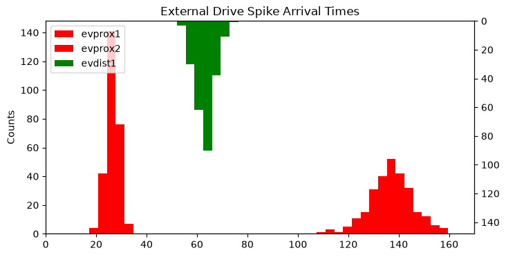
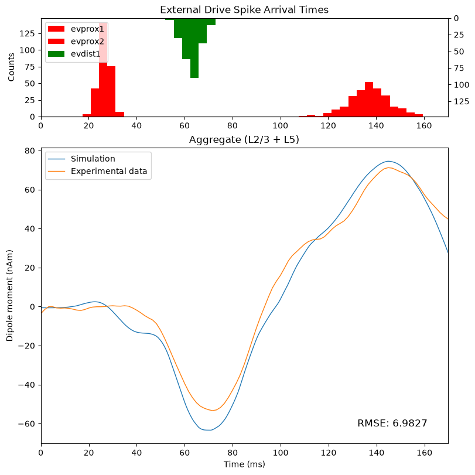
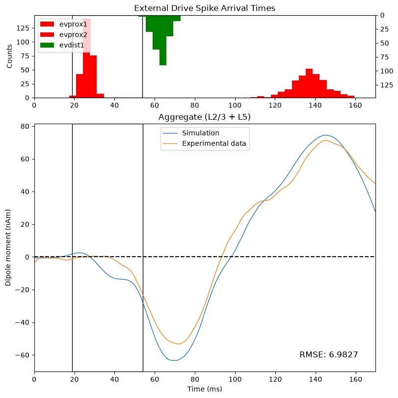
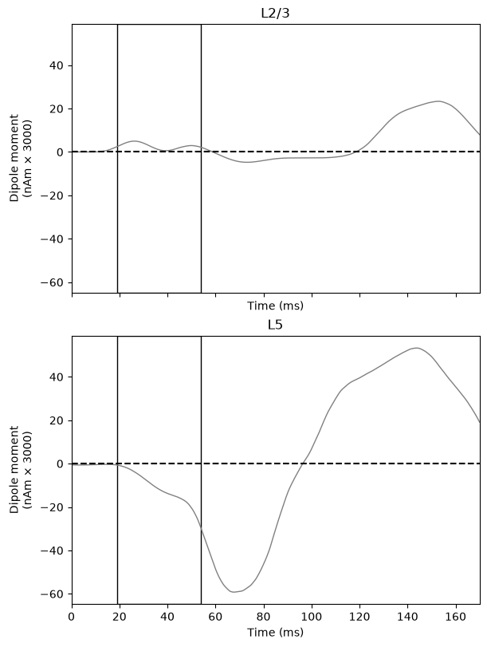
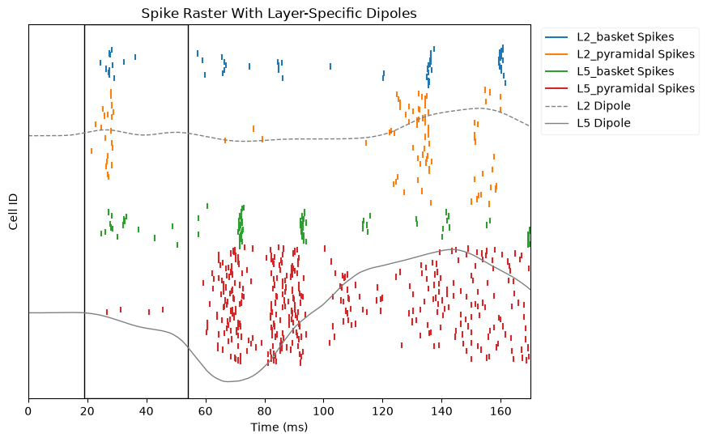
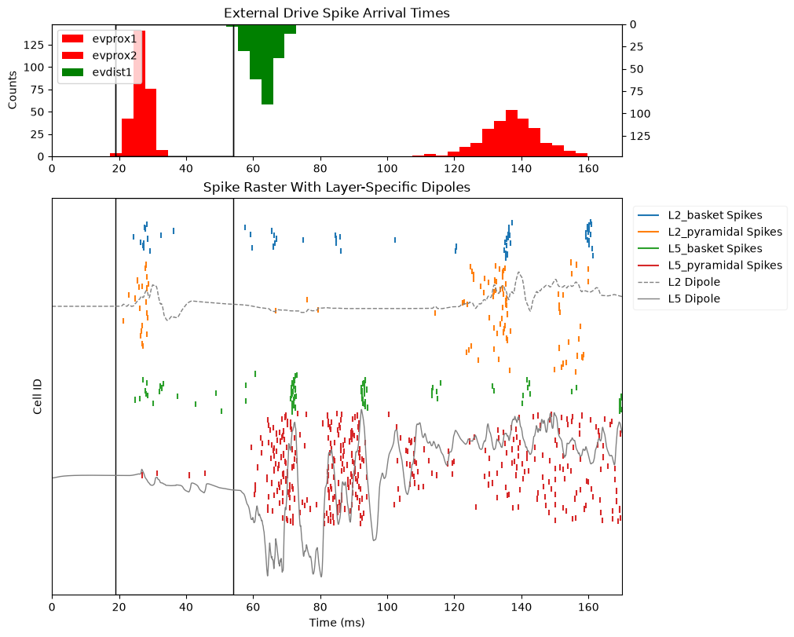

4.7.1 Multiscale Interpretation Part I
Multiscale Interpretation, Part 1
The next step in our experimental workflow is Step 4: hand tune the model parameters to improve the fit between your experimental data and your simulations
However, rather than immediately jump into the hand-tuning process,
we will first examine how the External Drives interact with
the local network in our simulations. The goal of these exercises is to
help you build critical analysis skills that provide the foundation for
interpreting and eventually tuning simulations to your own experimental
data.
Thus far, we have only compared the loaded experimental data to the aggregate dipole from our simulation. But in order to better understand the generators of our data, we need to consider more than just the aggregate dipole. We need to examine the cell and circuit activity that underlies our signals.
The power of the HNN model is that it allows us to "peek inside" the simulated network and examine the cell- and circuit-level activity, such as the layer-specific dipoles, cell-specific spiking, local field potentials, and more. These are data that are often not readily accessible to researchers using standard MEG/EEG experimental paradigms with human subjects, unless the MEG/EEG recordings are accompanied by an invasive recording modality.
In this page (Part 1), we will focus on multiscale interpretation of the underlying network activity around the time of the first proximal drive. In the next page (Part 2), we will repeat the same exercise for the time around the first distal drive.
We will begin by making a new figure that more closely matches the standard GUI output, so that the interpretation of the figures matches what is said in the accompanying video. We will generate a figure that shows:
A histogram of spikes from the
External DrivesThe scaled and smoothed dipole from the
defaultsimulationThe loaded experimental data
In order to get a 1-to-1 match with the standard GUI output, we will
also need to re-simulate the default network. The reason for this is
that the GUI and the Python API initialize the default
evoked drives with different seed (a.k.a. random number
generator) values.
Since we want to match the GUI outputs as closely as
possible, we need to use the same seed
values.
Previously, we loaded the Evoked Drives using the
add_erp_drives_to_jones_model() function. For this example,
we will apply the drives from the exact .json configuration
file used by the GUI. The only parameters that
differ are the "event_seed" for each drive.
gui_default_url = (
"https://raw.githubusercontent.com/jonescompneurolab/hnn-data/refs/heads/main/tutorial_networks/gui_defaults.json"
)
urlretrieve(
gui_default_url,
"gui_default.json",
);
We can then use the read_network_configuration function
to load the file. Note that you can also save the network configuration
file directly from the GUI to your local machine, and you can load the
drives directly from your machine using the same function.
from hnn_core import read_network_configuration # noqa
net_default_gui = read_network_configuration("gui_default.json")
# net_default_gui = read_network_configuration("gui_defaults_updated.json")
We will then "re-simulate" the network, and apply the smoothing and scaling factors exactly as we did in the previous section.
# Remember that you need to select a backend and set the number
# of cores that is appropriate for your machine, as we did
# above in the "Simulate Default Network" section
# check the backend/number of cores we selected above
# --------------------------------------------------
print(
f"Selected backend: {chosen_backend}",
f" Number of cores: {ncores}",
"\n" + "-" * 50 + "\n",
sep="\n",
)
# re-run the simulation with the updated seed values
# --------------------------------------------------
with chosen_backend(ncores):
gui_dipoles_list = simulate_dipole(
net=net_default_gui,
tstop=tstop,
n_trials=n_trials,
dt=dt,
)
# apply the same scaling/smoothing that we used above
# --------------------------------------------------
processed_dipole = gui_dipoles_list[0].copy()
processed_dipole.scale(3000).smooth(30);
# mod_shrink_output
Next, we will create our new, combined figure that matches the
initial GUI output. Since we will be re-generating this plot numerous
times throughout the rest of the ERP walkthrough, we will create a
plotting function called plot_initial_gui_figure that
accepts three arguments:
The network object
The processed simulation dipole
The experimental dipole
Writing a function to generate this plot will allow us to re-use this same code later with different arguments, which will reduce the amount of code we need to repeat later.
The first subplot in our figure will show the histogram of spikes
from the External Drives. Remember that we model the
External Drives as multiple series of exogenous spikes
arriving as inputs to either the proximal or distal locations in thenetwork, as shown in the diagrams below:
Figure 7.1.A: Template Network Model

Spikes for all cell types can be found in the
net.cell_response.spike_times_by_type data dictionary, with
the dictionary's keys corresponding to either the unique
cell_types name or the unique external_drives
name.
For example, in the code block below, we print the first and last spike from each drive
trial = 0
# we can get the drives programatically, but in an *unordered*
# list, with the line below
all_drives = list(net_default_gui.external_drives.keys())
# instead, I'll specify them manually by order of arrival time
all_drives = ["evprox1", "evdist1", "evprox2"]
# the object below includes *all* cell spikes, not just for drives
all_spike_types = net_default_gui.cell_response.spike_times_by_type
# print the first and last spike to arrive at the network for
# each external drive
for drive in all_drives:
first_spike = round(min(all_spike_types[drive][trial]), 3)
last_spike = round(max(all_spike_types[drive][trial]), 3)
print(f'Drive = "{drive}":')
print(
f" First spike arrival time: {first_spike} ms",
f" Last spike arrival time: {last_spike} ms",
"",
sep="\n",
)
To visualize the spike arrival times for all of the
External drives, we can use the built-in
plot_spikes_hist() method in the network's
CellResponse object. This method will generate a histogram
of the arrival times of the spikes at the network, which we will use to
examine the relationship between the driving inputs and the simulated
response.
Note that, in the code below, we "wrap" plot_spikes_hist
in a custom function called custom_drive_hist. The reason
we do this is to create a version of the template
plot_spikes_hist figure with pre-configured
arguments, allowing us to easily generate a custom version of the
plot later on without repeating the same code.
# initialize the figure
fig, ax = plt.subplots(figsize=(8, 4))
# define a function to customize the input histogram
def custom_drive_hist(
net,
ax,
):
_ = net.cell_response.plot_spikes_hist(
ax=ax,
invert_spike_types=["evdist1"], # "flip" the y axis
color={
"evprox1": "r",
"evdist1": "g",
"evprox2": "r",
},
show=False,
)
ax.set_title("External Drive Spike Arrival Times")
return
# plot the histogram using our custom function
custom_drive_hist(
net=net_default_gui,
ax=ax,
)

Note that the distal drive ("evdist1") is plotted on the secondary (right-most) y axis, which is inverted. We do this to emphasize the scientific point that distal depolarization is one of the drivers of what we call Inward Currents (see the Figure B below), meaning current that flows "down" the long, apical dendrites of the pyramidal neurons (i.e., down towards theinfragranular layers of the cortex).
Figure 7.1.B: Inward and Outward Currents

To replicate the initial GUI figure, we will need to combine the histogram with a plot of the simulated and experimental dipoles. Let's create another "wrapper" function that generates a custom implementation of the template dipole plot.
The code within the function below largely overlaps with our
previously-used plotting code. The only new addition is the inclusion of
the Root Mean Squared Error ("RMSE") in the dipole plot, which relies on
the _rmse helper function from
hnn_core.dipole
def plot_sim_exp_dipoles(
ax,
processed_dipole,
experimental_dpl,
sim_name=None,
):
from hnn_core.dipole import _rmse # noqa
# plot simulation and data in the bottom subplot
# --------------------------------------------------
_ = plot_dipole(
processed_dipole,
ax=ax,
show=False,
)
ax.lines[-1].set_color(gui_colors["blue"])
if sim_name is None:
sim_name = "Simulation"
ax.lines[-1].set_label(sim_name)
# plot experimental data in the bottom subplot
# --------------------------------------------------
_ = experimental_dpl.plot(
ax=ax,
show=False,
)
ax.lines[-1].set_label("Experimental data")
ax.lines[-1].set_color(gui_colors["orange"])
# add RMSE to the figure
# --------------------------------------------------
t0 = 0.0
tstop = processed_dipole.times[-1]
rmse = _rmse(
processed_dipole,
experimental_dpl,
t0,
tstop,
)
ax.annotate(
f"RMSE: {rmse:.4f}",
xy=(0.95, 0.05),
xycoords="axes fraction",
ha="right",
va="bottom",
fontsize=12,
)
ax.legend()
return
Lastly, we will create a function
plot_initial_gui_figure, that
combines our two plotting functions to
generate our combined GUI figure.
def plot_initial_gui_figure(
net,
processed_dipole,
experimental_dpl,
sim_name=None,
):
fig, axes = plt.subplots(
nrows=2,
figsize=(8, 8),
gridspec_kw={"height_ratios": [1, 3]}, # sets subplot dimensions
constrained_layout=True,
)
# plot the input histogram in the top subplot
# --------------------------------------------------
custom_drive_hist(
net=net,
ax=axes[0],
)
# plot the dipoles in the bottom subplot
# --------------------------------------------------
plot_sim_exp_dipoles(
axes[1],
processed_dipole,
experimental_dpl,
sim_name,
)
return fig
_ = plot_initial_gui_figure(
net_default_gui,
processed_dipole,
threshold_experimental_dpl,
)

Now that we have replicated the initial GUI output, we can move on to interpretation. In this Python API tutorial, we will briefly highlight some key insights, but please watch the accompanying GUI video tutorial for a more detailed walkthrough.
As a reminder, here we will focus on unpacking the dynamics that are responsible for generating our aggregate, simulated signal around the time of the first proximal drive.
We know from our outputs above that the first spike from the first proximal drive ("evprox1") arrives at the network just after 19ms, and the first spike from the first distal drive ("evdist1) arrives just after 54ms.
Given that the network is initially at rest and no other inputs arrive during this time period, any changes in the simulation output between those two timepoints can be isolated to the impact of the first proximal drive on the network.
We've previously told you that proximal drives generally cause what we refer to as "Outward Currents" (see the Figure B), i.e. current that flows towards the supragranular layers of the cortex in the long, apical dendrites of our pyramidal neurons.
However, if we examine the time period of interest, we see that this assertion does not hold true for the default network. While there is an initial positive deflection in the simulation dipole (blue line), the signal actually reverses direction and drops below zero, indicating net current flow towards the infragranular layers.
To highlight this observation, the code below adds an outline to the
time window of interest and also a dashed line at y = 0. We
will once again implement this feature as a function so that we can
re-use it later on. (It is not important to understand how this function
works.)
# create a function to add an outline around a time window
# --------------------------------------------------
def add_outline_to_subplot(
ax,
x_bounds=[19, 54],
show_origin_line=True,
):
from matplotlib.patches import Rectangle # noqa
# set x and y boundaries for the outline/rectangle
xmin, xmax = x_bounds[0], x_bounds[1]
ymin, ymax = ax.get_ylim()
# add a rectangle to each subplot
ax.add_patch(
Rectangle(
xy=(xmin, ymin), # start position
width=xmax - xmin,
height=ymax - ymin,
fill=False,
)
)
# optionally add dashed horizontal line at the origin
if show_origin_line:
ax.axhline(
linestyle="--",
color="black",
)
return
# re-generate and update figure with the outlines
# --------------------------------------------------
fig = plot_initial_gui_figure(
net_default_gui,
processed_dipole,
threshold_experimental_dpl,
)
add_outline_to_subplot(
fig.axes[0],
show_origin_line=False,
)
add_outline_to_subplot(fig.axes[1])

So, why might it be the case that the net current flow during this time window is inward? To begin to unpack this, we need to look at what's happening in the underlying circuits.
We can start by looking at the layer-specific dipoles, as done in the code below.
# initialize figure and plot layer-specific dipoles
# --------------------------------------------------
fig, axes = plt.subplots(
nrows=2,
ncols=1,
sharex=True,
figsize=(6, 8),
constrained_layout=True,
sharey=True,
)
for idx, layer in enumerate(["L2", "L5"]):
plot_dipole(
processed_dipole,
ax=axes[idx],
layer=layer,
show=False,
)
# add outline around first proximal drive
# --------------------------------------------------
for ax in fig.axes:
add_outline_to_subplot(ax)

These figures clearly indicate that the net inward current in the aggregate dipole (which is simply the sum of the Layer 2/3 and Layer 5 dipoles) in this time window is being driven by Layer 5.
Next, let's examine the spiking in the local network, paying particular attention to what is happening in Layer 5 that may explain the effect.
We can use the plot_spikes_raster() method of the
CellResponse object to generate a raster plot that shows
not only the cell-type-specific spiking, but also overlays the
layer-specific dipoles over the corresponding pyramidal neurons that
contribute to those signals. (Note that the layer-specific dipoles are
shifted along the y-axis to overlay the appropriate spiking cells, but
their scaling remains unchanged from the figure above.)
# initialize the figure and generate the raster plot
# --------------------------------------------------
fig, axes = plt.subplots(figsize=(8, 6))
def custom_spikes_raster(
processed_dipole,
ax,
):
_ = net_default_gui.cell_response.plot_spikes_raster(
ax=ax,
dpl=processed_dipole,
overlay_dipoles=True,
show=False,
)
ax.set_title("Spike Raster With Layer-Specific Dipoles")
# move legend outside figure to not overlap plot
# --------------------------------------------------
legend = ax.get_legend()
ax.artists[-1].remove()
legend.set_bbox_to_anchor((1.01, 0.85))
legend.set_loc("center left")
return
custom_spikes_raster(
processed_dipole=processed_dipole,
ax=axes,
)
# add outline around first proximal drive
# --------------------------------------------------
add_outline_to_subplot(
axes,
show_origin_line=False,
)

With this figure, we could begin to relate the cell-specific spiking to the layer-specific dipoles.
However, the smoothed dipole we plot in the figure above obscures the dynamic relationship between the cell spiking and the dipole. Typically, when doing this type of multi-scale interpretation, we want to look at the unsmoothed dipole in relation to the spiking
Below, we will re-copy the raw dipole, and apply only the scaling factor. We will then re-plot the spike raster with the unsmoothed dipole.
We can also add the drives histogram as an additional subplot, so we can view several of the key data we need for interpretation in one single figure.
unsmoothed_dipole = gui_dipoles_list[0].copy()
unsmoothed_dipole.scale(3000)
def plot_combined_raster_hist(
dipole,
net,
):
fig, axes = plt.subplots(
nrows=2,
figsize=(10, 8),
gridspec_kw={"height_ratios": [1, 3]}, # sets subplot dimensions
constrained_layout=True,
)
# plot the input histogram in the top subplot
# --------------------------------------------------
custom_drive_hist(
net,
axes[0],
)
# plot the spike raster in the bottom subplot
# --------------------------------------------------
custom_spikes_raster(
processed_dipole=dipole,
ax=axes[1],
)
return fig
fig = plot_combined_raster_hist(
dipole=unsmoothed_dipole,
net=net_default_gui,
)
for ax in fig.axes:
add_outline_to_subplot(
ax,
show_origin_line=False,
)

Now we have all of the information we need to relate the cell-specific spiking to the layer-specific dipoles in a single plot.
We will pick up from this point in the subsequent page, Part 2.